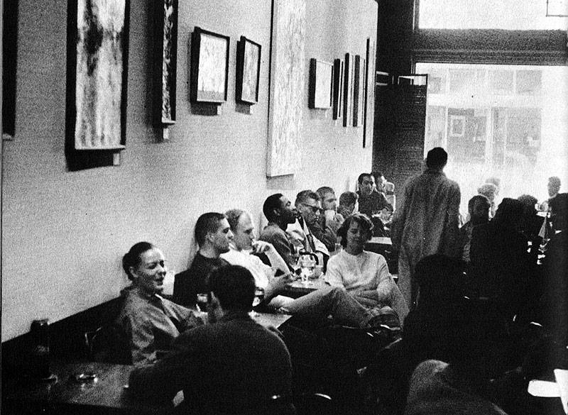
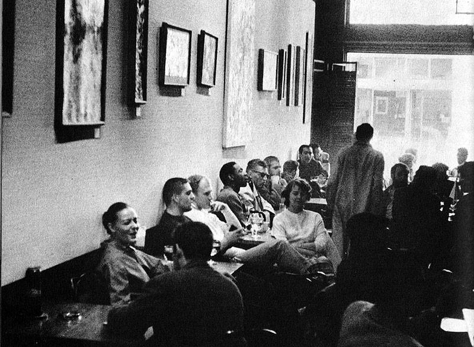

In the bustling streets of Percolatia, there stood a coffee haven known far and wide as Coffee Chronicles. Founded in the groovy year of 1972 by the dynamic duo of Max, a retired circus clown, and Emily, an ex-astronaut with a taste for adventure, the café was more than just a place to grab a cup of joe—it was a hub of laughter and inspiration.
One fateful morning, as the aroma of freshly ground beans filled the air, chaos ensued. A mischievous squirrel, fondly known as Mr. Nutty, had snuck into the café and wreaked havoc, causing bags of coffee beans to scatter and customers to duck for cover. Amidst the commotion, Max had a stroke of genius—he hopped onto his unicycle and led the charge in a daring chase to catch the caffeine-craving critter.
With Max's juggling skills and Emily's quick thinking, they managed to corral Mr. Nutty into a giant coffee mug, much to the delight of the amused customers. As they released the furry intruder back into the wild, the café erupted into applause, and Max and Emily were hailed as heroes of the espresso realm.
From that day forth, Coffee Chronicles became known as the place where even the wildest adventures brewed. Whether it was battling rogue squirrels or concocting out-of-this-world coffee blends, Max and Emily proved that with a dash of creativity and a sprinkle of laughter, anything was possible.
As the years passed, Coffee Chronicles continued to thrive, serving up cups of joy and inspiration to all who entered its doors. And though Max and Emily have since retired to pursue new adventures, their spirit lives on in every sip taken at Coffee Chronicles—a reminder that sometimes, the best stories are found in the most unexpected places.